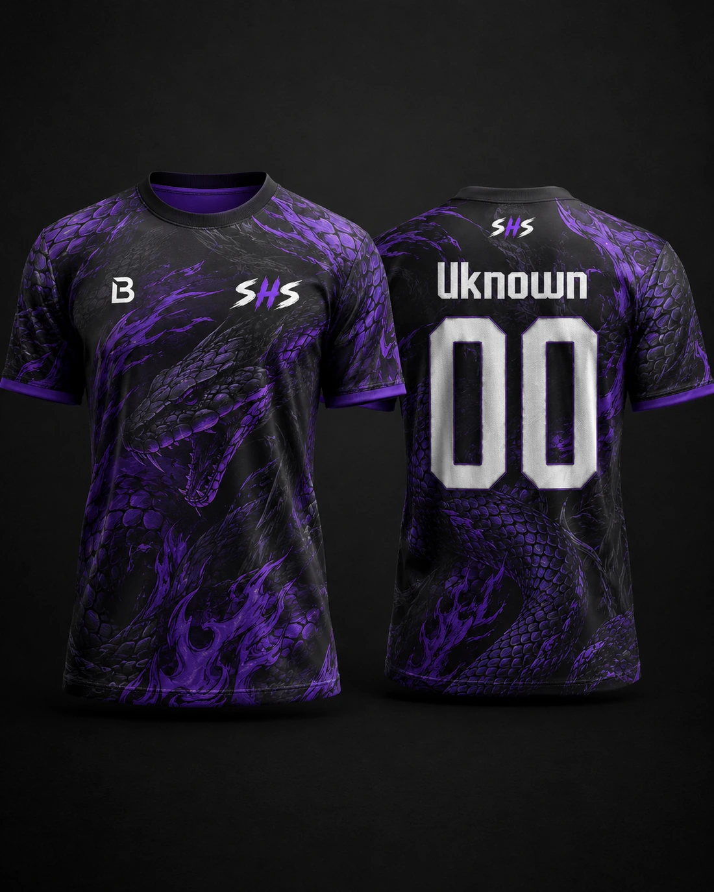

SHUSH / DROP 01
Sem barulho.
Drop 01primeira peça oficial
Backorapartner técnico/digital
SHUSHgaming, identidade e estrutura
Sem barulho.
Só rounds.
Uma equipa pequena, uma presença feita com intenção. Roster, estética e direção no mesmo sítio.
OFFICIAL CONCEPTDROP 01

round calmoquiet until clutchsilence the lobbysem barulho, só roundscall limpa
round calmoquiet until clutchsilence the lobbysem barulho, só roundscall limpa
FRAME / 002
Identidade com escala real.
A SHUSH não tenta parecer maior do que é. Roster claro, visual próprio, humor controlado e presença digital feita com cuidado.
Origem
Nasceu do grupo que joga junto e quis apresentar-se melhor. O nome ficou; a direção visual veio logo a seguir.
Visual
Preto, roxo, branco sujo e azul frio. Sem verde. A energia vem da luz, textura e contraste.
Tom
Competitivo, seco e direto. O site mostra roster, jersey e partner técnico sem inventar troféus.
Grupo
O ponto de partida é simples: jogar junto, entrar em call e dar forma ao que já existia.
Roster
Papéis mais claros, nomes fixos e menos ruído à volta do round.
Identidade
Preto, roxo frio, SHS e uma linguagem visual que não precisa de exagerar.
Drop 01
Primeira jersey, interesse manual e Backora como partner técnico/digital.
FRAME / 003
Roster preview
Ordem de entrada, roles claras e placeholders limpos quando ainda falta imagem real.
FRAME / 004
Partner
Backora entra como partner técnico/digital, não como logótipo perdido numa grelha vazia.

TECHNICAL / DIGITAL PARTNER
backora.org
Backora
Presença digital, identidade e suporte técnico da SHUSH.